Три дня в городе
Калининград
на три дня
Остров Канта, Амалиенау и Музей Мирового океана.
Сначала — мосты и река. Затем — виллы и парк. На третий день — музей и набережная. Каждая прогулка возвращает к своему началу.
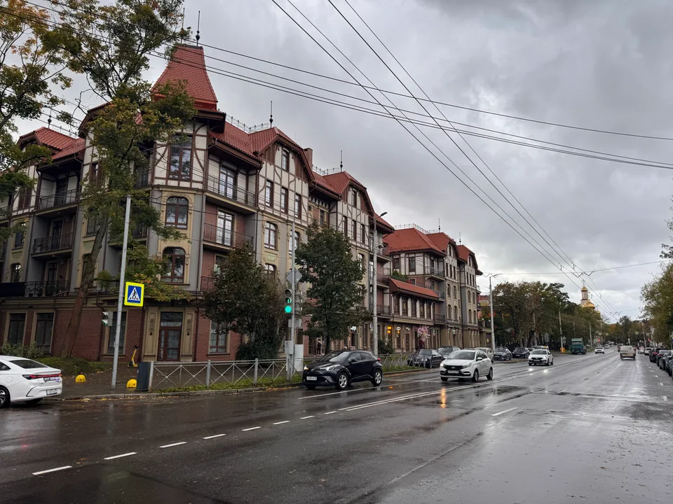
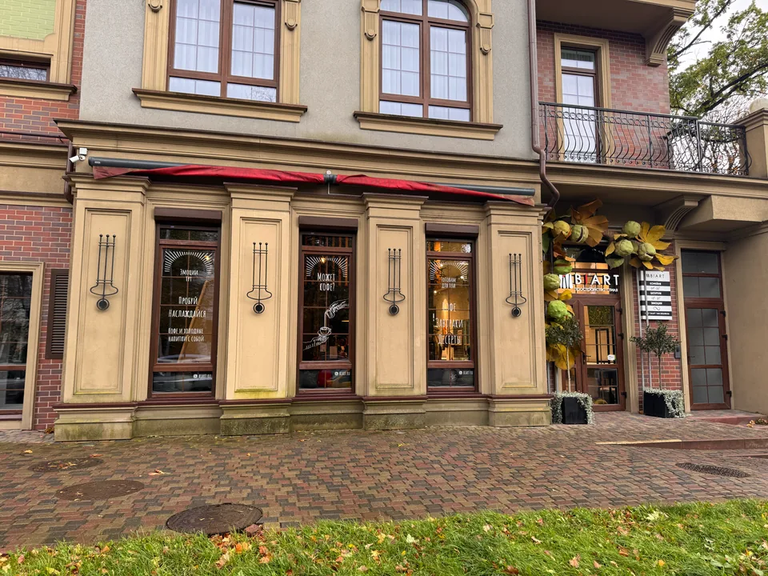
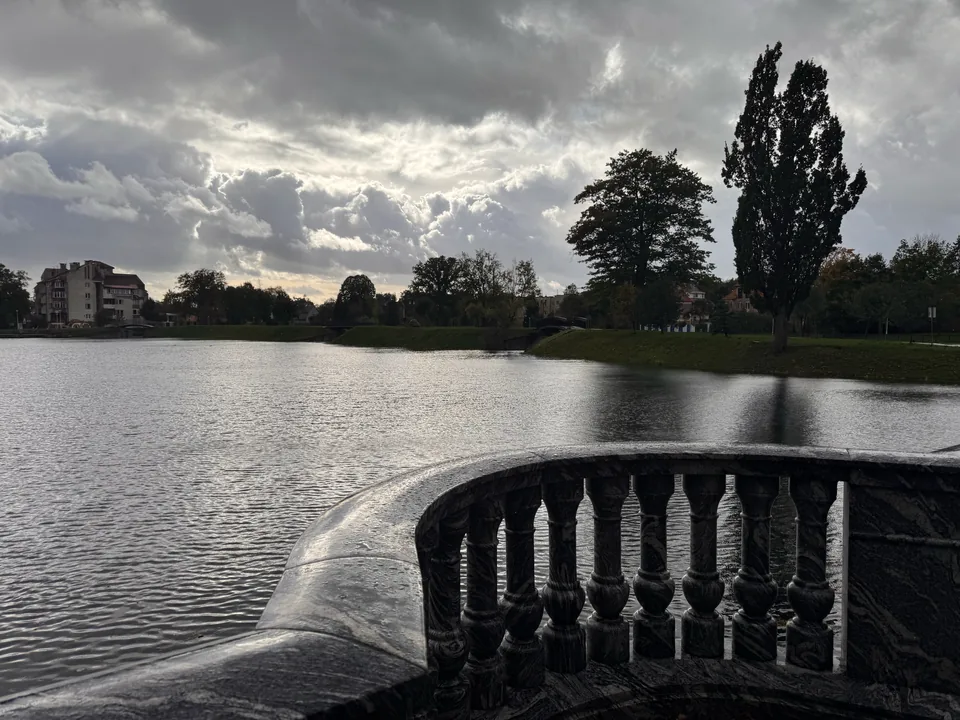
Амалиенау · фотографии GoDune

- Время на поездку
- 3 дня
- Между остановками
- Пешком
- В одном буклете
- Весь ваш план
День 1
Остров Канта и река
Пройдите от Рыбной деревни по Медовому мосту к собору. На острове оставим время для прогулки и паузы у реки, затем вернёмся к началу.
 Начало у Преголи
Начало у ПреголиРыбная деревня
Прогулка вдоль реки. Башня и водная поездка — отдельный выбор.
Переход на островМедовый мост
На мосту найдите хомлина Карла, затем перейдите на остров.
Дорожки и паузаОстров Канта
Оставьте время на дорожки острова и остановку у воды.
У стены собораМогила Иммануила Канта
Мемориал у стены собора. Посещение музея сюда не входит.
 Финал на острове
Финал на островеКафедральный собор
Осмотр снаружи. Концерт добавляйте по времени выбранного сеанса.
Начало и возвращение — Рыбная деревня. До неё добираетесь отдельно.
День 2
Амалиенау и парк
От кирхи королевы Луизы — через парк к виллам Лео и Шмидт. Загляните к «Альтес Хаусу», найдите Антошку и вернитесь к парку.
Начало у паркаКирха памяти королевы Луизы
Начните с фасада кирхи. Спектакль требует отдельного билета.
Пауза в зелениЦентральный парк
Пройдите по дорожкам и сделайте паузу перед виллами.
Фасад с улицыВилла Лео
Рассмотрите фасад с публичной улицы.
Вилла и деталиВилла Шмидт
Остановка у фасада; внутрь и во двор план не ведёт.
Адрес с историейМузей «Альтес Хаус»
Найдите Антошку у музея. Для входа в квартиру нужна отдельная запись.
Начало и возвращение — кирха королевы Луизы у Центрального парка.
День 3
Музей Мирового океана
Один музейный корпус и прогулка вдоль судов. В «Глубине» оставим полтора часа, после — паузу и виды на «Витязь» и «Планету Океан» с набережной.
 Один музейный корпус
Один музейный корпусМузей Мирового океана: «Глубина»
Один выбранный корпус: «Глубина». Проверьте часы и билет; после посещения — пауза.
Судно с набережнойСудно «Витязь»
Судно с набережной. Экскурсия внутри потребует дополнительного времени и билета.
Архитектура у реки«Планета Океан»
Осмотр корпуса снаружи. Для экспозиции выберите сеанс отдельно.
Начало и возвращение — корпус «Глубина» Музея Мирового океана.
Один район в день. Оставьте время задержаться.
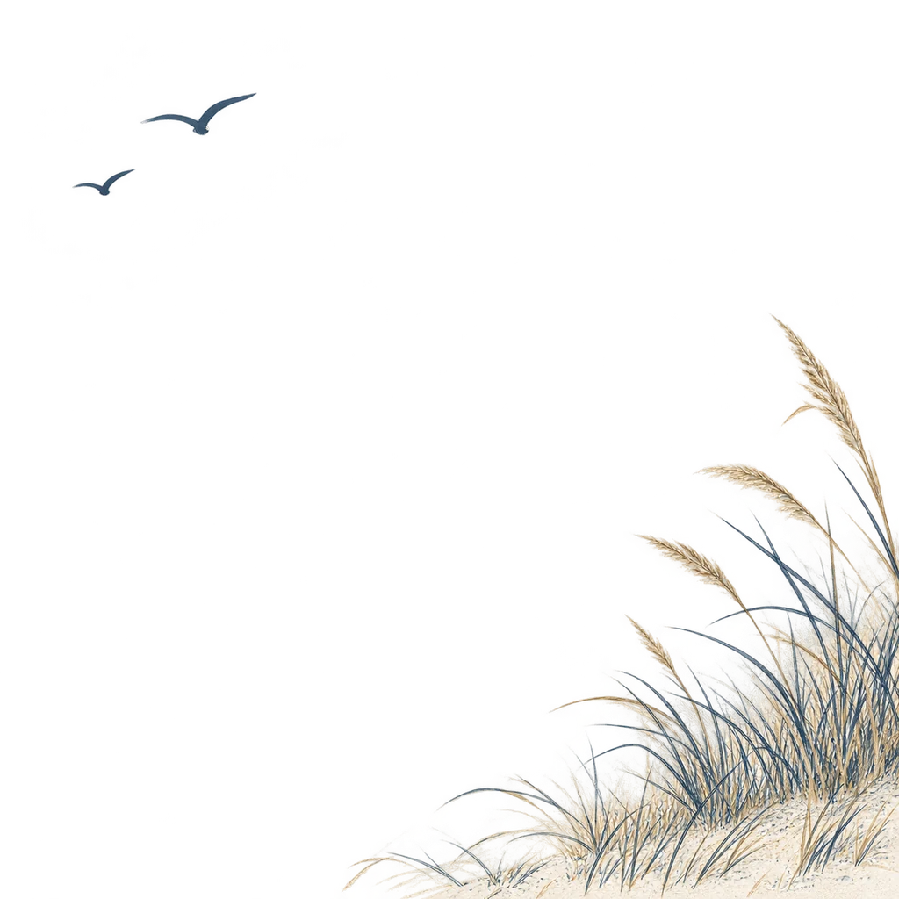
До и после прогулки
Всё рядом с планом
Начало и возвращение +
В первый день — Рыбная деревня. Во второй — кирха королевы Луизы. В третий — корпус «Глубина» Музея Мирового океана. Дорогу от жилья до начала прогулки добавьте в «Моём дне».
Открыть свой день →Музеи, билеты и сеансы +
Для «Глубины» заложено 90 минут внутри. Проверьте день работы и выберите билет. «Витязь», «Планету Океан», собор и виллы этот план показывает снаружи; экскурсии и концерты добавляются отдельно.
Музей Мирового океана: часы и билеты ↗Собор: афиша и билеты ↗Обед, кофе и паузы +
У реки, в парке и после музея оставлены паузы по 20 минут. Выберите кафе и блюдо под свой день: обед не спрятан в эти короткие остановки.
Выбрать место и блюдо →Личные изменения и PDF +
В «Моём дне» можно изменить порядок, длительность, добавить заметку и ночёвку. Затем вернитесь сюда по сохранённой ссылке: один буклет соберёт именно ваши три дня.
Настроить поездку →